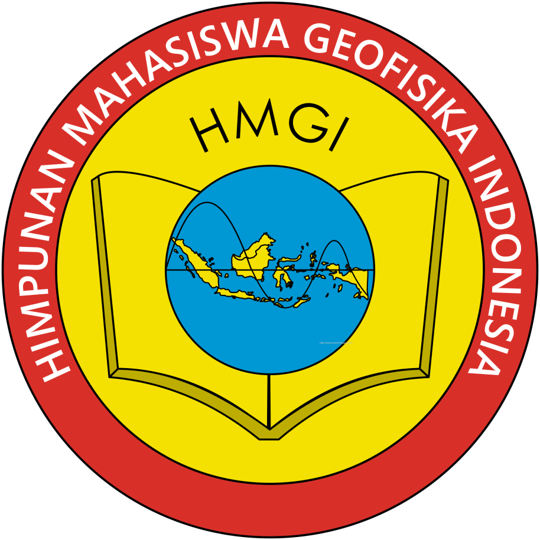
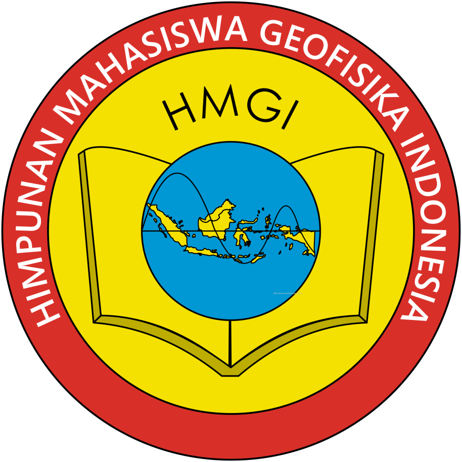

ERT
Electrical resistivity tomography (ERT) data are collected along a line as a combined sounding–profiling survey, using a multi- electrode resistivity measurement system. This data set can be inverted for the true subsurface resistivity by using 2D or 3D inversion algorithms and the resulting estimated models can be interpreted accordingly.
Electrical resistivity tomography is a method adapted to the recognition and study of 2D structures perpendicular to the profile and to the identification of the various geological layers, including the surface cover, but is more expensive and time consuming than the electromagnetic survey.


 
